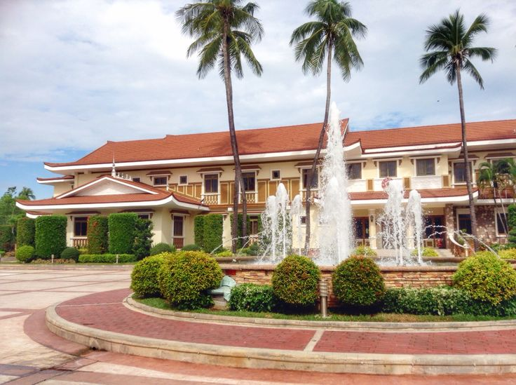
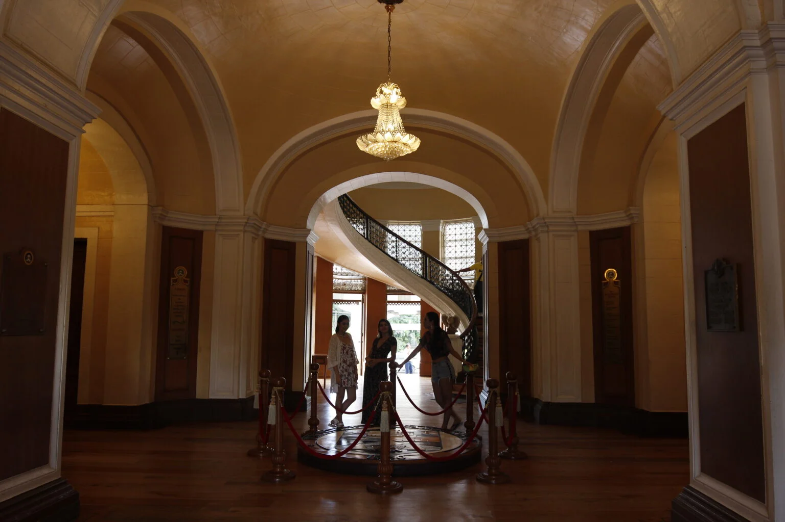
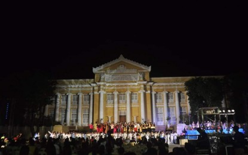
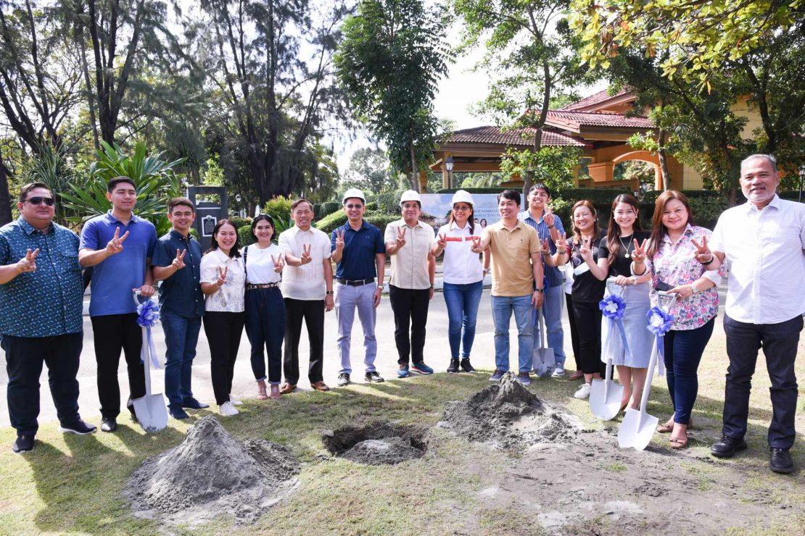

The Pangasinan Provincial Capitol in Lingayen, Pangasinan, Philippines, is a neoclassical government building serving as the seat of the provincial government. Built during the American colonial period, it is considered one of the most beautiful provincial capitols in the country and a symbol of Pangasinan's heritage and governance.

Historical Background
The building was constructed in 1917 and completed in December 1918 under Governor Daniel Maramba, with design by American architect Ralph Harrington Doane. It served as a hallmark of American-era civic architecture in the Philippines.
The structure was heavily damaged during World War II but was reconstructed in 1948 to 1949 while maintaining its original design. Recognized among the Eight Architectural Treasures of the Philippines by the Filipino Heritage Festival and the National Commission for Culture and the Arts, it remains the only one outside Metro Manila with such distinction.

Architectural Significance
The Provincial Capitol Building of Pangasinan is a neoclassical structure built in 1917 under the supervision of architect Ralph Harrington Doane during the term of Governor Daniel Maramba, the province's seventh governor and the Grand Old Man of Pangasinan.
The Capitol Building was severely damaged during World War II but was initially reconstructed in 1949 and later rehabilitated from 2007 to 2008. It was declared one of the Eight Architectural Heritage Treasures of the Philippines in 2003 by the Filipino Heritage Festival, a grantee of the National Commission for Culture and the Arts.

Heritage and Tourism
The Sangguniang Panlalawigan of Pangasinan passed an ordinance declaring the Pangasinan Provincial Capitol Building a cultural heritage site in time for its 100th anniversary in December. The measure includes funding for preservation and penalties for anyone who damages the building.
A resolution was also approved to seek official recognition from the National Commission for Culture and the Arts, which has the authority to grant national heritage status. Officials hope this will lead to national funding for restoration and maintenance.
The Capitol is valued for its historical significance, having been built in 1917 to 1918 during the American colonial period, damaged in World War II, and reconstructed in 1948. It remains a strong representation of public service and Pangasinan's civic legacy.

Modern Redevelopment
Under Governor Ramon V. Guico III, the Capitol Complex is undergoing major modernization, including green spaces, new facilities, and an 11-story government center and convention hall. The historic Capitol building, however, is preserved as Pangasinan's principal heritage landmark.
The redevelopment aims to improve the delivery of public services while preserving the historical character of the original structure, allowing the site to remain both functional and culturally significant.
